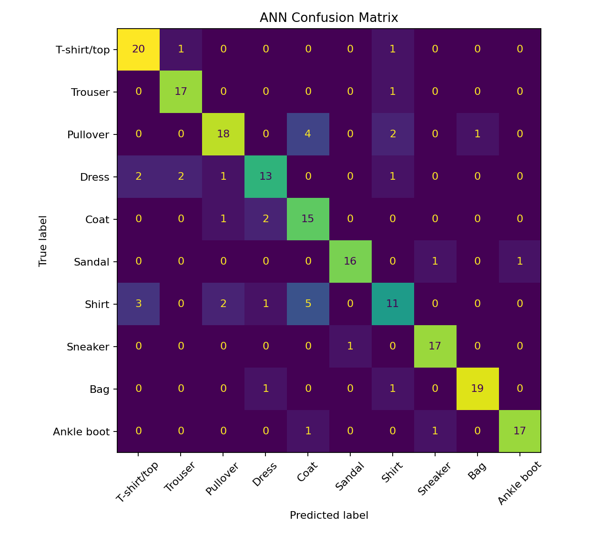
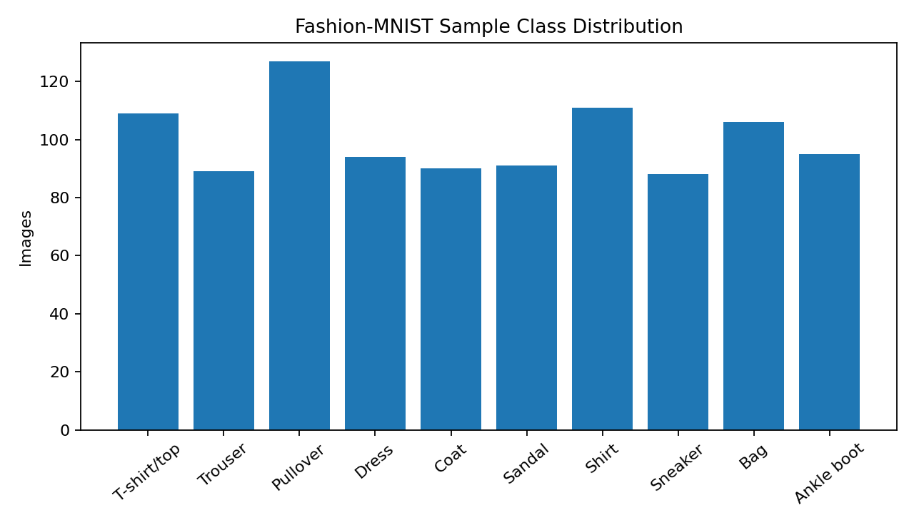

Dependable systems
Design repeatable pipelines, transformations, data models, and quality checks.
Data Engineering · Analytics · Responsible AI
I am Sai Tejaswi Nooka, a data engineer who builds dependable data pipelines and continues to develop practical machine-learning skills. This portfolio presents focused evidence rather than long reports, with each artifact organized around context, work completed, results, and reflection.
My portfolio connects production data engineering with machine-learning fundamentals. I emphasize reliable preparation, valid evaluation, clear communication, ethical review, and human judgment.
Design repeatable pipelines, transformations, data models, and quality checks.
Translate technical findings into clear decisions for instructors, peers, and stakeholders.
Use feedback, testing, and reflection to improve both technical work and leadership practice.
Each card links to complete artifact information, reproducible evidence, or a dedicated project page.
An interactive AI history timeline connecting milestones, contributors, technical shifts, and present-day impact.
A guided planning assistant that helps beginners define a feasible machine-learning problem without replacing their own work.
A concise learning artifact connecting ANN, CNN, RNN, GAN, activation functions, ethical risks, communication, and change leadership.
A less-common UCI dataset project with original data, reproducible Python code, quality checks, metrics, charts, and deployment limits.
A reproducible Python analysis that checks data quality, scales pixels, prevents leakage, trains an ANN, and documents model limits.
My personal framework for leading AI change through trust, transparency, dignity, accountability, measurable action, and quarterly adaptation.
A real UCI sensor-data capstone applying data audit, visualization, leakage-safe preparation, four-model comparison, evaluation, ethics, business outcomes, and responsible deployment planning.
Artifact 1
Introduction: This interactive timeline explains how foundational ideas, machine learning, deep learning, generative AI, and responsible AI developed through connected milestones.
Make important AI history understandable through concise research and interactive visual design.
I verified milestone dates, summarized their importance, organized the content chronologically, and tested responsive and keyboard behavior.
HTML, CSS, JavaScript, research synthesis, accessibility review, and GitHub Pages.
The artifact combines historical research with an explorable interface instead of presenting another static list.
It demonstrates my ability to translate complex technical material into a clear experience for students, instructors, technical peers, and hiring managers.
Students, instructors, technical peers, and hiring managers interested in AI development and communication.
Artifact 2
Introduction: ML PathFinder AI is a guided planning assistant that helps beginners turn an unclear machine-learning idea into a smaller, testable, and responsible project plan.
Guide problem definition, data assessment, technique selection, testing, and ethical review without replacing the learner’s own work.
I designed the PATH framework, tested repeated prompts and failure cases, reviewed consistency, and refined the assistant’s academic-integrity boundaries.
Custom GPT design, prompt engineering, structured testing, Word documentation, HTML, and CSS.
It combines practical ML planning with human verification, ethical questions, and safeguards against completing graded work.
It shows human-centered AI design, iterative evaluation, communication, and responsible tool use.
Beginning ML students, instructors, instructional designers, and AI product reviewers.
Artifact 3
Introduction: This workshop artifact connects neural-network learning with feedback, resilience, ethical judgment, communication, and adaptive leadership.
Explain ANN, CNN, RNN, GAN, activation functions, ethical risks, and their connection to responsible leadership.
I researched the concepts, translated them into plain language, connected model iteration to leadership, and supported the learning with model evidence.
Python, scikit-learn, pandas, Matplotlib, HTML, CSS, and technical research.
It integrates technical learning, ethical analysis, and leadership application in one artifact.
It demonstrates the balanced technical and human judgment needed to guide AI/ML adoption.
Instructors, ML learners, team leaders, and responsible-AI reviewers.


Artifact 4 · New dataset project
Introduction: This reproducible project classifies Cammeo and Osmancik rice grains from seven image-derived morphological measurements in a less-common real UCI dataset.
Build and evaluate an explainable classifier while protecting the test data from preprocessing leakage.
I loaded 3,810 records, checked the schema, missing values, duplicates, and class balance; created a stratified 80/20 split; scaled features inside a training pipeline; trained logistic regression; and evaluated held-out records.
Python, pandas, SciPy, scikit-learn, Matplotlib, ARFF, JSON, HTML, and CSS.
The artifact includes the complete original dataset, executable code, data audit, saved metrics, visual outputs, leakage-safe workflow, and model limitations.
The workflow applies to agricultural, manufacturing, and other quality-classification problems based on measured shape.
Data/ML hiring managers, instructors, quality analysts, and agricultural technology teams.


I selected this artifact because it allowed me to demonstrate a complete machine-learning workflow with a real dataset that is not used as frequently as datasets such as Iris or Titanic. Working with the Rice Cammeo and Osmancik dataset helped me understand how physical measurements can be converted into features for a classification problem. Instead of focusing only on the final accuracy, I first examined the dataset structure, class distribution, missing values, and duplicate records. This reminded me that dependable results begin with careful data review.
The most valuable part of the project was building the preprocessing and model steps as one pipeline. The numerical features were standardized using information from the training data, which prevented information from the test set from influencing model development. The logistic-regression model achieved 91.6% test accuracy and a 91.4% macro F1 score. These similar scores indicated that the model performed reasonably well across both rice varieties rather than succeeding only because of one dominant class.
This artifact also taught me to communicate limitations honestly. A strong score on held-out data does not automatically mean that the model is ready for agricultural use. The dataset represents only two rice varieties and was created under controlled image-processing conditions. Before deployment, I would test grains collected with different cameras, lighting conditions, locations, and harvesting periods. I would also compare logistic regression with tree-based models and use cross-validation. Overall, this project strengthened my skills in data validation, leakage prevention, model evaluation, visualization, and responsible interpretation.
Artifact 5
Introduction: This reproducible audit presents the complete data-quality and modeling evidence behind a Fashion-MNIST neural-network result.
Build a transparent image-classification pipeline that checks data quality and evaluates an ANN against a simple baseline.
I checked schema, missingness, duplicates, and balance; normalized pixels; made a stratified split; trained the ANN; and saved metrics and charts.
Python, pandas, scikit-learn, Matplotlib, NumPy, CSV, JSON, HTML, and CSS.
It provides a dataset sample, executable source, output files, baseline comparison, and clear limitations rather than an unsupported score.
It demonstrates repeatable data preparation, leakage prevention, model evaluation, and technical communication.
Data and ML hiring managers, instructors, analysts, and technical peers.
Professional work in data engineering, analytics enablement, cloud support, and information systems.
ETL/ELT pipelines, SQL optimization, Snowflake, data models, analytics support, and data-quality controls.
Qlik Sense, SQL, Alteryx, Python automation, Tekton, Terraform, GCP, KPI reporting, and pipeline monitoring.
University of North Texas · Denton, Texas
Gokaraju Rangaraju Institute of Engineering and Technology · Hyderabad, India
Tools represented by professional experience and portfolio evidence.
Connect
For data engineering opportunities, analytics collaboration, or discussion of the portfolio work, contact me by email.